Diese Sammlung enthält qualitativ hochwertige Open-Source-Schriften als direkte oder funktionale Alternativen zu bekannten kommerziellen Schriften.
Alternative zu ITC Officina Sans#
ITC Officina, entworfen von Erik Spiekermann, ist schwer zu ersetzen – das »J« und das »i« sind unverwechselbar. Mögliche Alternativen:
Fira Sans
Asap
Source Sans
FF Meta von Erik Spiekermann gilt als „Anti-Helvetica": humanistisch, warm, für Text optimiert. Spiekermann lieferte auch die beste freie Alternative gleich mit:
Fira Sans
Mozilla Text
Alternative zu Helvetica / Arial#
Max Miedinger entwarf Helvetica 1957 für die Haas'sche Schriftgießerei. Sie wurde zur meistgenutzten Schrift des 20. Jahrhunderts. Arial ist Microsofts metrisch kompatibler Nachbau.
Tex Gyre Heros
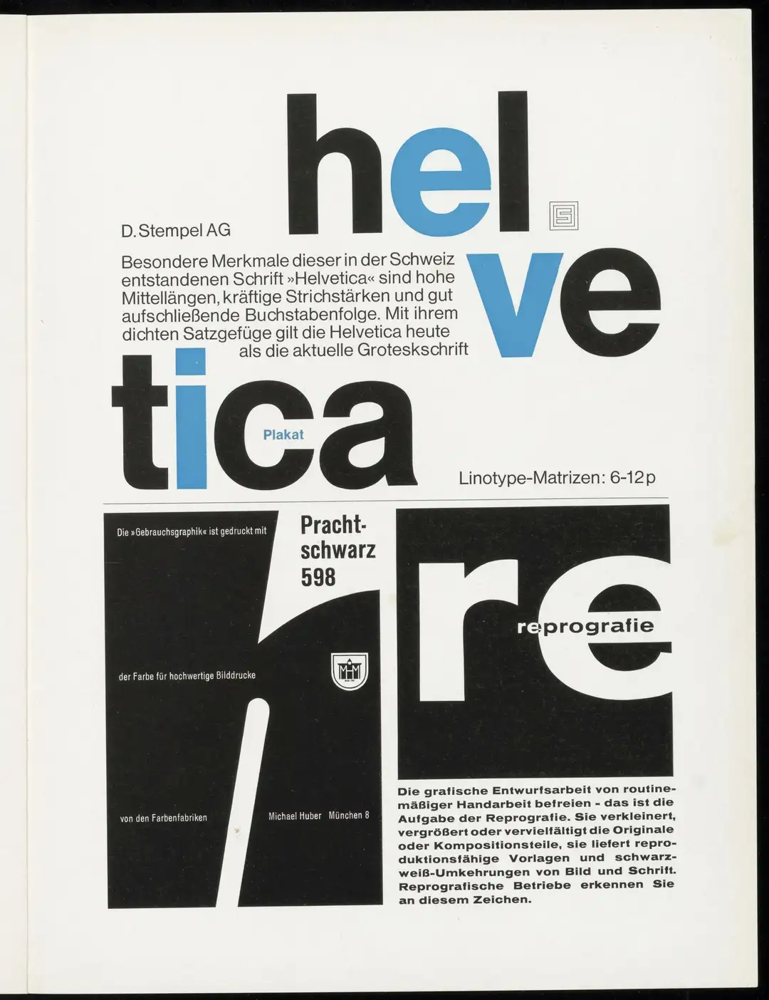
Helvetica-Werbung
Alternative zu Helvetica Neue / San Francisco#
Helvetica Neue und Apples SF Pro dominieren digitale Oberflächen. Inter wurde für denselben Zweck entwickelt – sachlich, neutral, auf Bildschirme optimiert.
Inter
Alternative zu Futura#
Paul Renner entwarf Futura 1927 als Schrift der Moderne – Kreis, Dreieck, Quadrat.
Jost*
Metropolis
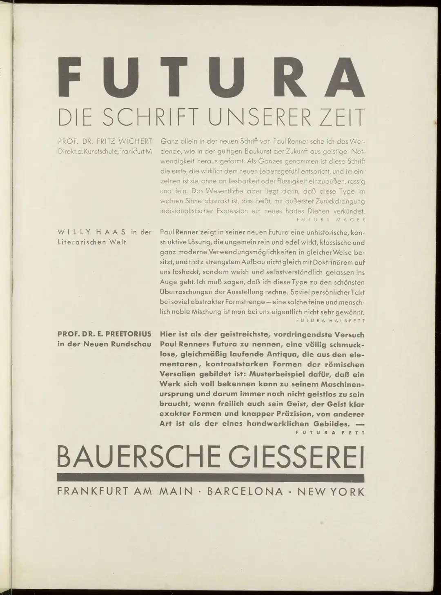
Futura-Werbung von 1928
Alternative zu ITC Avant Garde Gothic#
Herb Lubalin entwarf ITC Avant Garde Gothic 1970 auf Basis des Logos des gleichnamigen Magazins – eine konsequent auf dem Kreis konstruierte Grotesk.
Tex Gyre Adventor
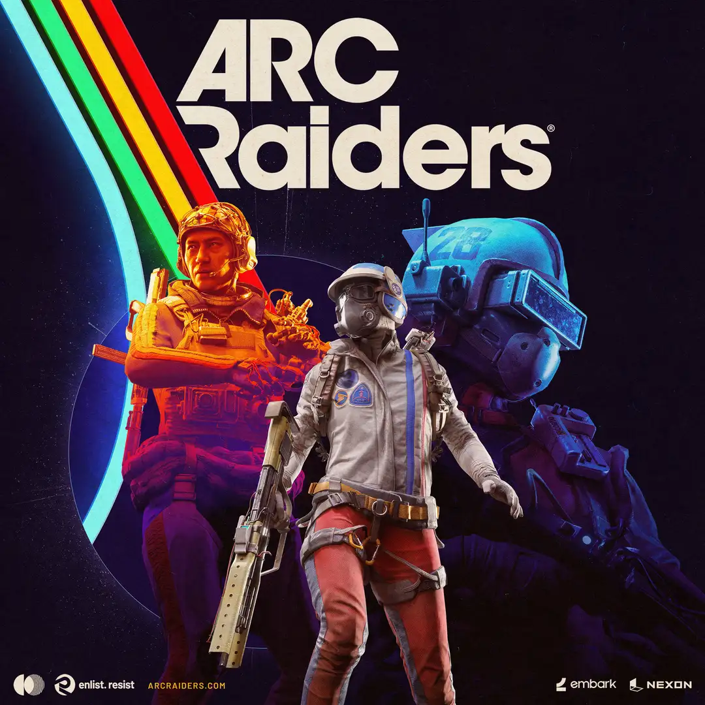
Keyart aus dem ArcRaiders Presskit – gesetzt in ITC Avant Garde Gothic.
Alternative zu Gotham#
Tobias Frere-Jones entwarf Gotham im Jahr 2000 für das Magazin GQ , inspiriert von der Beschilderung New Yorker Nachkriegsbauten. Die geometrisch-amerikanische Grotesk wurde durch Barack Obamas Wahlkampf 2008 weltbekannt.
Metropolis
League Spartan
Raleway
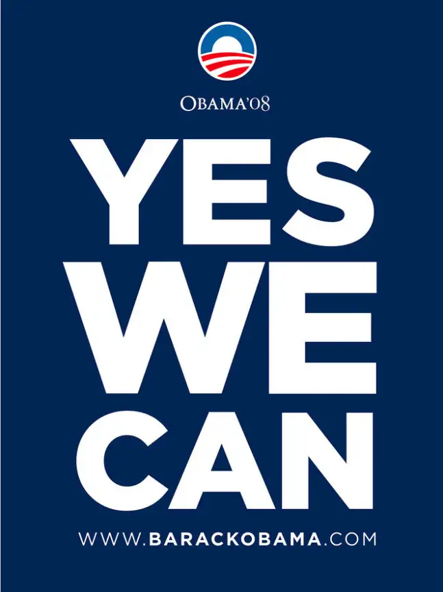
Plakat des Obama-Wahlkampfs 2008 – gesetzt in Gotham Bold.
Alternative zu Gill Sans#
Eric Gill entwarf Gill Sans zwischen 1926 und 1930 für Monotype. Die »britische Helvetica«: humanistisch, warm, mit Persönlichkeit.
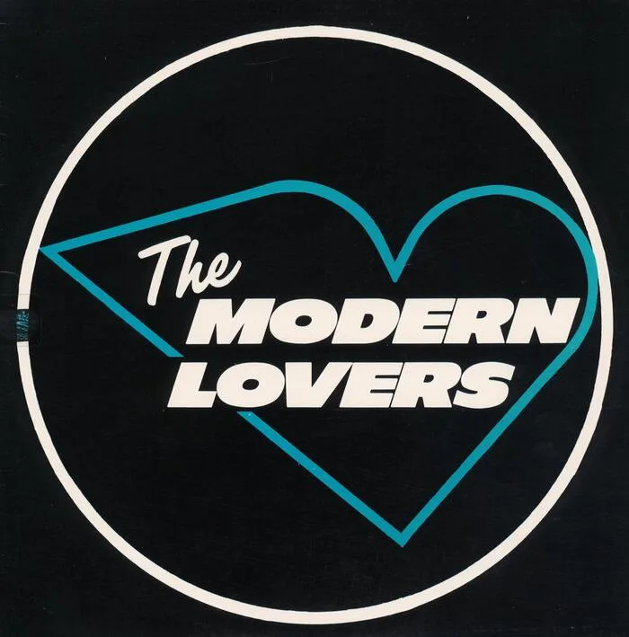
Albumcover von The Modern Lovers – gesetzt in Gill Sans.
Alternative zu Trade Gothic / News Gothic#
Trade Gothic war jahrzehntelang die Standardschrift im amerikanischen Zeitungs- und Institutionsdruck. Sachlich, leicht kondensiert, unaufgeregt.
IBM Plex Sans
Public Sans
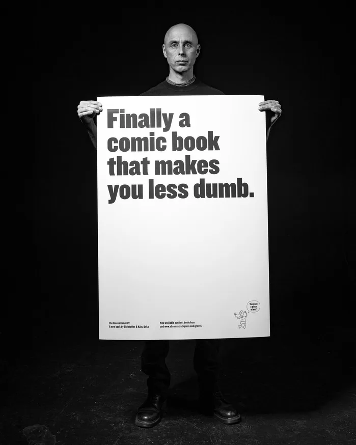
Plakat einer Comic-Buch-Kampagne – gesetzt in Trade Gothic.
Alternative zu Akzidenz Grotesk#
Akzidenz Grotesk (1896, Berthold) war die erste große Grotesk für Werbedruck – Vorbild für Helvetica und Univers.
Work Sans
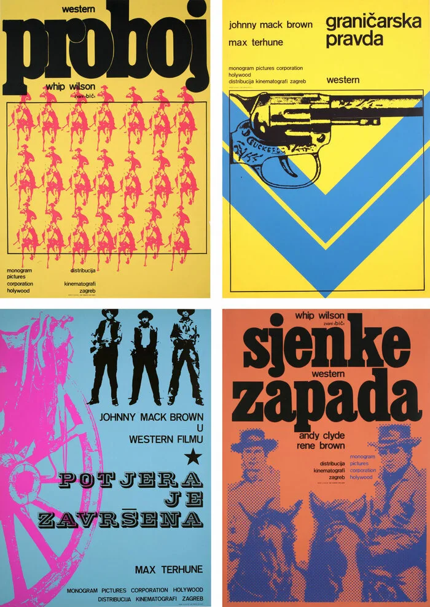
Western-Filmplakate von Kinematografi Zagreb – gesetzt in Akzidenz Grotesk.
Alternative zu DIN 1451#
DIN 1451 ist die genormte deutsche Industrieschrift von 1931 – konstruiert, technisch und unverwechselbar.
DINish
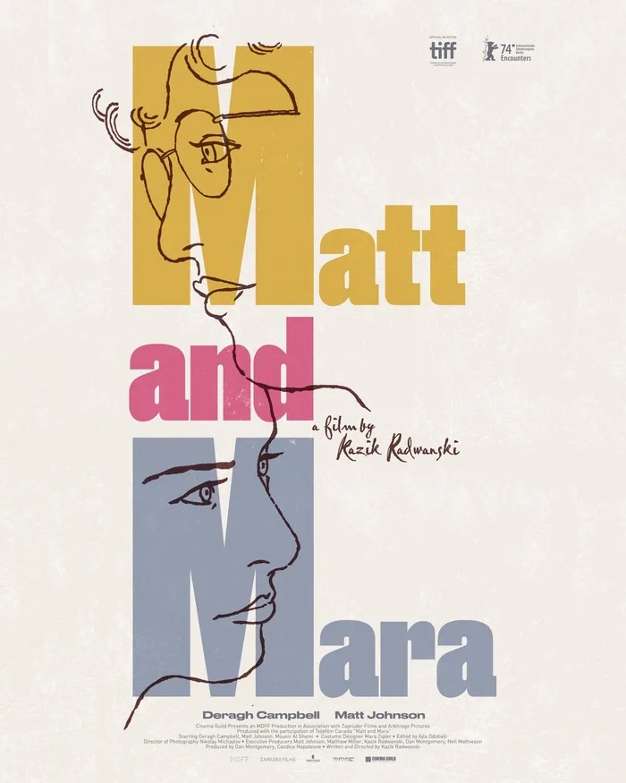
Filmplakat „Matt and Mara“ – gesetzt in einer DIN-Schrift.
Alternative zu Highway Gothic#
Für US-Straßenschilder entwickelt: klar, offen, auf Lesbarkeit bei Geschwindigkeit optimiert.
Overpass
Junction
– ähnlich offen, humanistischer Charakter.
Alternative zu VAG Rounded / FF Dax Rounded#
VAG Rounded (VW, 1979) hat gerundete Strichenden – warm, freundlich, gut für Consumer-UI.
Nunito
Alternative zu Eurostile / Microgramma#
Die Space-Age-Schrift schlechthin. Quadratisch, technisch, unverkennbar.
Titillum Web
Lockheed L-1011 TriStar – Beschriftung in Eurostile.
Alternative zu Neue Haas Grotesk Display#
Die ursprünglichen Helvetica-Zeichnungen haben mehr Persönlichkeit als die verwässerten digitalen Versionen.
Space Grotesk
Epilogue
Alternative zu Optima#
Optima (Zapf, 1958): keine Serifen, aber spürbare Strichstärkenkontraste. Diese Mischung ist schwer zu ersetzen.
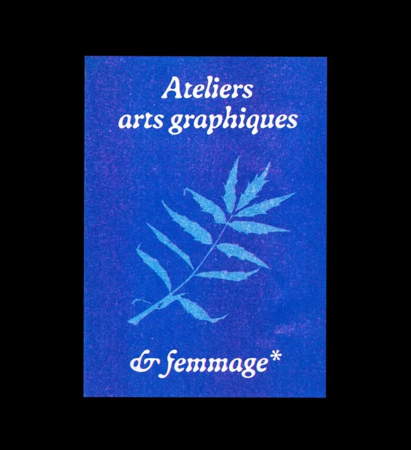
Flyer „Ateliers arts graphiques & femmage“ – gesetzt in Optima.
Alternative zu Bodoni / Didot#
Extremer Kontrast, senkrechte Achsen. Bodoni und Didot – Inbegriff des klassizistischen Stils.
Bodoni*
GFS Didot
Playfair
Unna
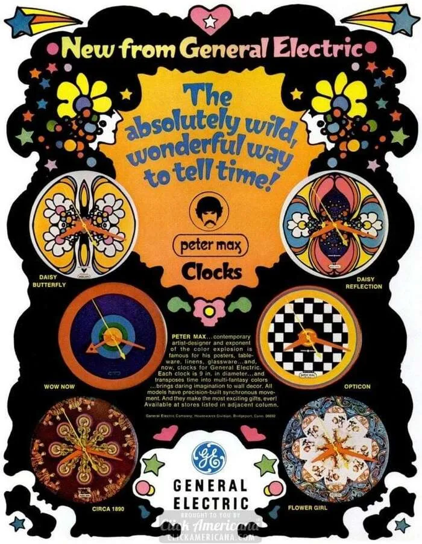
Peter-Max-Anzeige für General-Electric-Uhren (LIFE, 1968) – mit Bodoni gesetzt.
Alternative zu Garamond / Adobe Garamond#
Claude Garamond schnitt seine Typen Mitte des 16. Jahrhunderts in Paris. Adobe Garamond und ITC Garamond sind die bekanntesten modernen Revisionen.
EB Garamond
Cormorant
Libre Caslon
Crimson Pro
Alternative zu Baskerville#
John Baskerville entwarf seine Transitional-Antiqua um 1750 in Birmingham – klarerer Kontrast als Garamond, nahezu senkrechte Achsen.
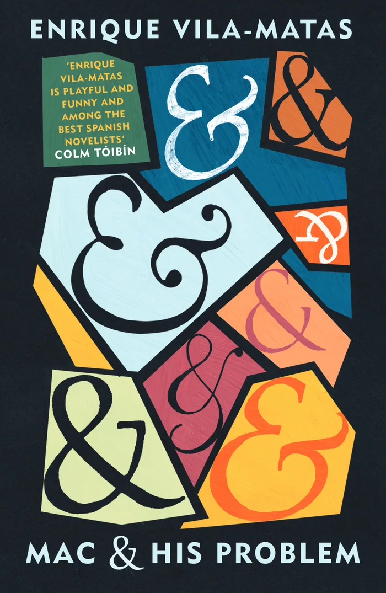
Cover von „Mac and His Problem“ – mit Baskerville gesetzt.
Alternative zu Palatino / Book Antiqua#
Hermann Zapf entwarf Palatino in den 1940er Jahren für Stempel. Book Antiqua ist Microsofts lizenzfreier Nachbau.
Tex Gyre Pagella
Libertinus Serif
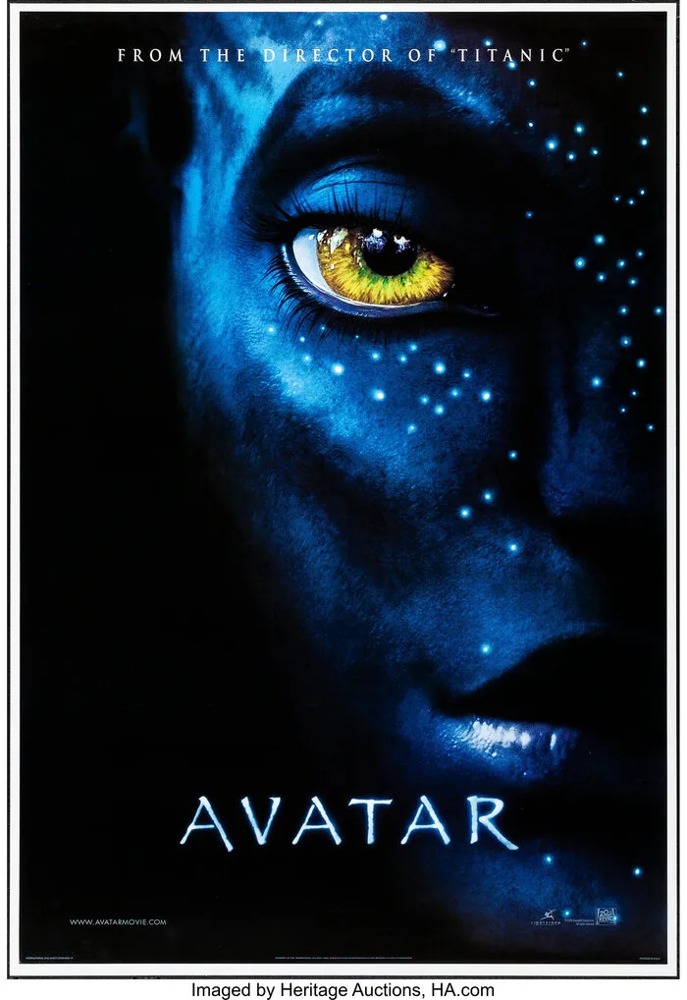
Avatar-Filmplakat – Titel in Palatino.
Alternative zu Georgia / Charter / Minion Pro#
Drei Klassiker für Buchsatz und Bildschirmlesbarkeit. Open-Source-Alternativen:
Literata
Source Serif
IBM Plex Serif
Alternative zu Times New Roman#
Stanley Morison entwarf Times New Roman 1931 für die Londoner Zeitung The Times . Seit Jahrzehnten ist sie die Standardschrift in Büros, Schulen und Gerichten weltweit.
Tex Gyre Termes
Alternative zu Century Schoolbook#
Morris Fuller Benton entwarf Century Schoolbook 1919 – robust, klar, eigens für Schulbücher entwickelt.
Tex Gyre Schola
Alternative zu ITC Bookman#
ITC Bookman (Edward Benguiat, 1975): kräftig, runde Formen, starke Serifen. Klassiker im amerikanischen Buchsatz.
Tex Gyre Bonum
Alternative zu Georgia / Palatino für Web-Texte#
Wer Georgia oder Palatino für längere Webtexte nutzt, aber etwas Wärmeres sucht:
Lora
Alternative zu Charter / Georgia (Leseantiqua)#
Charter und Georgia wurden explizit für Bildschirmlesbarkeit entwickelt. Zwei Open-Source-Schriften mit demselben Ziel:
Merriweather
Spectral
Alternative zu Minion Pro / Arno Pro#
Robert Slimbachs Minion und Arno Pro sind der Maßstab für humanistische Antiqua im Buchsatz. Zwei gute Alternativen:
Alegreya
Vollkorn
Alternative zu Rockwell / Clarendon#
Kräftige, gleichstarke Serifen, die Überschriften Nachdruck verleihen.
Mozilla Headline
Arvo
Compagnon
Alternative zu Times / Ionic No. 5#
Times war fürs Zeitungssetzen optimiert: hoher Kontrast, enge Proportionen, klein gut lesbar. Newsreader überträgt das ins Digitale.
Newsreader
Alternative zu Cooper Black / Hoefler Text Display#
Expressiv, fett, unübersehbar. Cooper Black (1921) und Hoefler Text Display sind die Klassiker des dramatischen Display-Serifs.
Fraunces
Piazzolla
Alternative zu Palatino für wissenschaftliche Texte#
Wer Texte mit Runen, IPA-Notation oder mittelalterlichen Sonderzeichen setzt, braucht mehr Unicode-Abdeckung als Palatino bietet:
Junicode
Fraktur / Blackletter#
Für Designs wo ein Blackletter-Charakter gefragt ist:
Grenze Gotisch
Grenze
Unifraktur
Alternative zu Consolas / Monaco / Menlo#
Die verbreitetsten Schriften in Code-Editoren und Terminals. Sechs gute Open-Source-Alternativen:
JetBrains Mono
Fira Code != → ≠, -> → →).
Maple Mono
Cascadia Code
Commit Mono
– sehr neutral, auf visuelle Ruhe ausgelegt.
Hack
Alternative zu Operator Mono#
Operator Mono (Hoefler & Co., 2016) machte echte Kursive im Code-Editor populär – Kommentare heben sich optisch ab statt nur geneigt zu sein.
Victor Mono
Alternative zu Comic Sans#
Vincent Connare entwarf Comic Sans 1994 für Microsoft Bob – informal, handschriftlich, und seit Jahrzehnten gleichermaßen beliebt wie verspottet. Wer den informellen Charakter sucht, findet hier bessere Alternativen:
Kalam
Komika
Krikikrak
Alternative zu Zapf Chancery / Snell Roundhand#
Die klassischen Script-Schriften für Einladungen und Urkunden.
Playwrite DE LA
Sansita Swashed